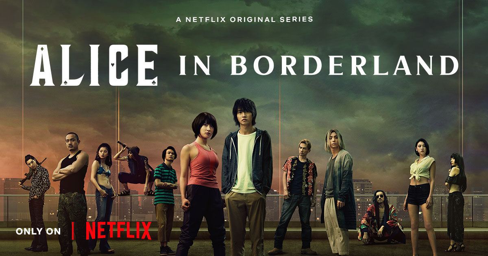

♔ ALICE IN B♡RDERLAND ♔

♕ SYNOPSIS!
Alice in Borderland (今際の国のアリス Imawa no Kuni no Alice?) is a Japanese sci-fi thriller live-action series directed by Shinsuke Sato based on the manga series of the same name, originally written and illustrated by Haro Aso. It was written by Sato, Yoshiki Watabe, and Yasuko Kuramitsu. The first season premiered on Netflix on December 10, 2020. On December 24, 2020, it was announced that the series was renewed for a second season, barely two weeks after its online debut. The announcement came from numerous social accounts for Netflix around the world. Arisu—a listless, jobless, and video-game-obsessed young man—suddenly finds himself in a strange, emptied-out version of Tokyo in which he and his friends must compete in dangerous games in order to survive. In this strange world where his friends are now dead and he is left suicidal, Arisu meets Usagi, a young woman who’s navigating the games alone. Together, they set out to unravel one mystery after another as they risk their lives and confront what it means to live.
©
♘ CHARACTERS!
Ryohei Arisu (有栖 良平) is the protagonist of Alice in Borderland. He is portrayed by Kento Yamazaki. His specialist suit is changed from Hearts to Diamond. Like in the manga, he is often looked down by his father & brother, which led to pent up frustration about his life. Karube and Chota were the only happiness he had in the real world. He was someone who didn't take being alive as a blessing and regretted it deeply when he entered the borderland.
©
Yuzuha Usagi (宇佐木 柚葉 Usagi Yuzuha)is one of the main characters in Alice in Borderland. Her speciality is spade (♠️).Usagi was the daughter of a famous mountain climber in Japan, and she frequently accompanied him on his mountain trips. However, after being accused of faking his Mount Everest hike, he allegedly committed suicide after telling Usagi he was going to hike. Usagi was initially distraught, but she secretly promised her father that she would survive in the borderland.
©
Hikari Kuina (水鶏 光 Kuina Hikari)is one of the characters in Alice in Borderland. Her specialty changed from clubs (♣️) to spade (♠️).Kuina's father trained her in various fighting techniques as the only son of a family of martial artists. Kuina, on the other hand, lacked the temperament for martial arts and was frequently unable to finish a fight or land the finishing blow. Her father was also enraged to discover her experimenting with make-up, which he thought was inappropriate for his son. When Kuina left, he told her she would never return. She would later undergo sex reassignment surgery in order to become a woman.
©
Shuntaro Chishiya, with the alias of Cheshire, is one of the main characters in Alice in Borderland. He is portrayed by Nijiro Murakami. His speciality is diamond (♦️).Chishiya is portrayed as sly and cunning, and he employs his wits on purpose. He frequently maintains a calm demeanor. Chishiya is also a manipulative player, as he is seen taking advantage of others. Despite staying in the background in most situations, he has a sharp tongue toward others. He's also extremely perceptive, which he puts to good use.
©
Rizuna An (安 梨鶴奈 An Rizuna), also known as Ann (アン), is one of the characters in Alice in Borderland. Ann worked in the Tokyo Metropolitan Police Department's forensics department before coming to the Borderland. Her previous relationships are largely unknown. She was forced to play games in order to survive, just like everyone else who was sent to Borderland. She either discovered or was discovered by The Beach at some point. She was present when Hatter first created The Beach, as evidenced by flashbacks. Her extensive gaming experience earned her a position as one of The Beach's executive members. Since then, she's been assisting Hatter, The Beach's founder, and the other members in collecting all of the playing cards.
©
Suguru Niragi (韮木 傑 Niragi Suguru) is one of the characters in Alice in Borderland. He is portrayed by Dori Sakurada.Niragi is portrayed at The Beach as a young but dangerous militant member. He is thought to be psychotic and to have malicious intentions toward others. Niragi abuses power when he is in a position to wield it, as evidenced by his use of violence and intimidation to achieve his goals. He is an overall disturbing character who takes advantage of the dystopian state of the world to express his malevolent desires.
©

Morizono Aguni (also known as Agni) is a major antagonist in the Netflix series Alice in Borderland, based on the manga of the same name. He is the Hatter's best friend and the final antagonist of the first season, as well as a major protagonist in the second season. He first appears as a high-ranking member of the Beach, serving as the Leader of the Militant Core (one of the two factions that control the Beach) until the Ten of Hearts game occurs, sending the Beach into chaos.
©
Akane Heiya (塀谷 朱音 Heiya Akane) is a character that appeared in Alice in Borderland Season 2.